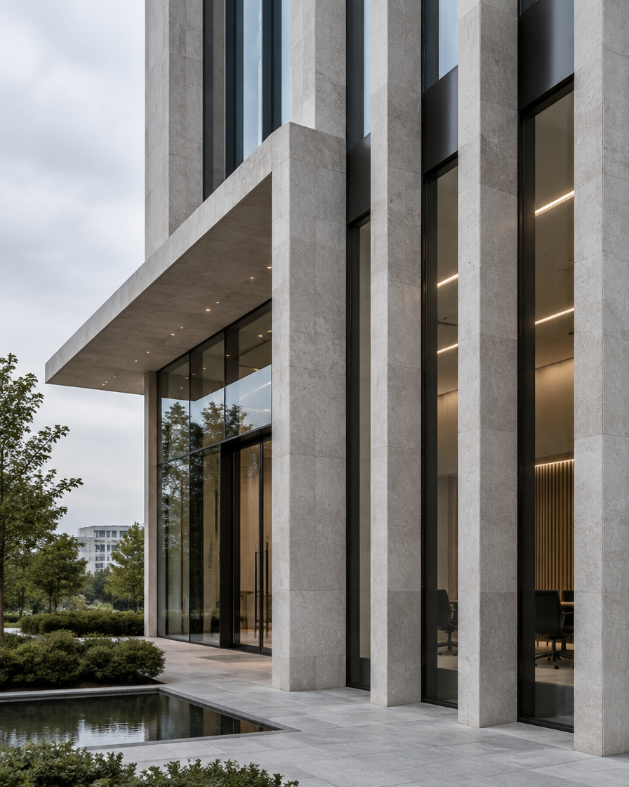

1. 수집하는 개인정보 항목
법무법인 집현전 의료전문센터(이하 "법인")는 상담신청 및 서비스 제공을 위해 아래와 같은 개인정보를 수집합니다.
| 필수 항목 | 성함, 연락처(휴대전화번호), 상담 제목, 상담 내용 |
|---|---|
| 자동 수집 항목 | 접속 로그, 브라우저 정보 |
2. 개인정보의 수집 및 이용 목적
| 상담 서비스 제공 | 상담 신청 확인, 담당자 배정, 회신 및 상담 진행 |
|---|---|
| 사건 수임 | 사건 위임계약 체결 및 이행, 진행 경과 안내 |
| 민원 처리 | 문의사항 확인 및 답변, 고지사항 전달 |
3. 개인정보의 보유 및 이용 기간
법인은 원칙적으로 개인정보 수집 및 이용 목적이 달성된 후에는 해당 정보를 지체 없이 파기합니다.
| 상담 신청 기록 | 상담 완료 후 1년 |
|---|---|
| 사건 위임계약 기록 | 사건 종결 후 관련 법령이 정한 기간 |
4. 개인정보의 파기 절차 및 방법
법인은 개인정보 보유 기간의 경과, 처리 목적 달성 등 개인정보가 불필요하게 되었을 때에는 지체 없이 해당 개인정보를 파기합니다. 전자적 파일은 재생할 수 없는 기술적 방법으로 삭제하며, 종이 문서는 분쇄하거나 소각하여 파기합니다.
5. 정보주체의 권리와 행사 방법
이용자는 언제든지 자신의 개인정보에 대해 열람·정정·삭제·처리정지를 요청할 수 있으며, 법인은 관련 법령에 따라 지체 없이 조치합니다.
6. 개인정보 보호책임자 및 문의처
| 개인정보 보호책임자 | 김용호 대표변호사 |
|---|---|
| 전화 | 02-581-1045 / 팩스 02-581-1042 |
| 이메일 | jhj5811028@daum.net |
| 주소 | 서울특별시 서초구 반포대로 106, 4층~5층(서초동, 태홍빌딩) |
공고일자: 2026.10.29